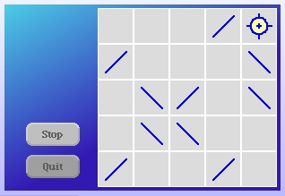

We also need to change the #boardRelativePositionFor to account for how we moved the control panel and the new margins.
boardRelativePositionFor: evt
| evtPosn |
evtPosn := evt hand position.
^evtPosn - self position - ((self gameMargin + self panelWidth) @ self gameMargin)
Now we're going to modify colors. Let's start with the easy one. I want the cells to be drawn with a white border. Modify the #cellBorderColor class method on the LaserGameColors class as follows.
cellBorderColor
^Color white
Now we go back to the LaserGame class and modify how the game looks. Add these new instance methods.
windowColorRamp
^ {0.0 -> (Color r: 0.3 g: 0.8 b: 0.9).
1.0 -> (Color r: 0.2 g: 0.1 b: 0.7)}
setWindowColors
self color: (Color
r: 0.369
g: 0.369
b: 0.505).
self fillWithRamp: self windowColorRamp oriented: 0.3@0.8
Now we modify the #xxx instance method on the LaserGame class to use these new color setup methods.
setupMorphs
self layoutPolicy: ProportionalLayout new.
self setWindowColors.
self
addMorph: self makeControlPanelMorph
fullFrame: (LayoutFrame
fractions: (0 @ 0 corner: 0 @ 1)
offsets: (self gameMargin @ self gameMargin
corner: (self gameMargin + self panelWidth) @ self gameMargin negated)).
self
addMorph: self makeGameBoardMorph
fullFrame: (LayoutFrame
fractions: (0 @ 0 corner: 1 @ 1)
offsets: ((self gameMargin + self panelWidth) @ self gameMargin
corner: self gameMargin negated @ self gameMargin negated)).
One last step for changes to the colors of the game morph. Modify the #makeControlPanelMorph method so that it is no longer white.
makeControlPanelMorph
| panel |
panel := RectangleMorph new borderWidth: 0;
color: Color transparent;
layoutPolicy: ProportionalLayout new.
self addButtonsToPanel: panel.
^panel
Okay. Open up a new LaserGame morph and let's have a look.
We're not done. Close the morph before continuing.